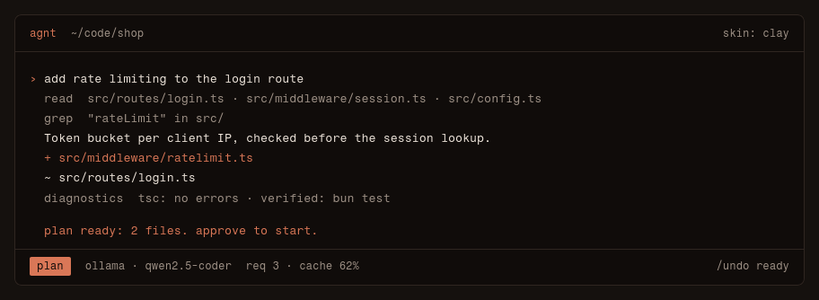

Documentation
agnt is an AI coding agent for the terminal. This page covers installing it, connecting a model, and every slash command.

Install
Linux:
curl -fsSL https://raw.githubusercontent.com/mozzarellabio/agnt/main/install.sh | sh
Windows (PowerShell):
irm https://raw.githubusercontent.com/mozzarellabio/agnt/main/install.ps1 | iex
Connect a model
Hosted providers (bring your own key): Anthropic, OpenAI, OpenRouter, Gemini, DeepSeek, Groq, xAI and Mistral. Local: Ollama and LM Studio.
- /key
- store an API key
- /model
- pick a model from any provider
- /provider
- add an OpenAI-compatible endpoint
- /fallback
- models to switch to when the current one errors or is rate-limited
- /effort
- reasoning effort
Modes and permissions
Four modes: ask confirms each action, auto accepts edits, plan reads and proposes until you approve, free has no limits.
- /mode
- permissions: ask, auto-accept, read-only plan, or free (no limits)
- /allow
- always allow matching actions, e.g. bash:git *
- /deny
- always block matching actions, e.g. bash:rm *
Teams of agents
- /team
- spawn a team of agents (squad, fullstack, research, audit, orchestra)
- /spawn
- add one agent to the team
- /agents
- list agents and chat with one
- /focus
- switch to an agent's chat
- /kill
- remove an agent
- /orch
- let the main agent delegate to teammates
- /roles
- available agent roles
- /board
- show the shared task board
- /map
- live map of the agent orchestra
Sessions and context
- /new
- new chat tab
- /close
- close this chat tab
- /sessions
- resume a saved chat
- /clear
- clear this agent's conversation
- /compact
- summarize older context now
- /context
- context window usage
- /stats
- requests, tokens, cache and cost
- /memory
- show remembered project facts (.agnt/memory.md)
- /export
- write this conversation to a markdown file
- /copy
- copy the last answer to the clipboard
- /todo
- show the focused agent's task list
Undo and rewind
- /undo
- restore the working tree to before the last turn (git repos include bash changes)
- /redo
- reapply what /undo reverted
- /rewind
- roll files and conversation back to before an earlier prompt
- /worktree
- work in an isolated git worktree on its own branch
- /diff
- git diff of the working tree
Git and GitHub
- /init
- write AGENTS.md for this project
- /review
- review uncommitted changes (read-only)
- /git
- branch, upstream, changes and open PR with checks
- /branch
- create and switch to a new branch
- /commit
- commit the current changes with a message that matches the repo style
- /pr
- no number: push and open a PR for this branch; with a number: review that PR (read-only)
- /issue
- read a GitHub issue, work on it on a branch and verify
- /checks
- diagnose and fix failing CI on this branch
Extending agnt
- /mcp
- MCP servers (stdio tools)
- /plugin
- list, install or remove plugins (commands, agents, skills, skins, hooks, MCP, code mods)
- /skills
- list available skills (built-in, user, project, plugin)
- /schedule
- run a prompt later or repeatedly: every 30m, in 2h, daily 09:00, or a date
- /loop
- repeat a prompt every interval (30s, 5m, 1h) while idle
- /rc
- control agnt from your phone (QR code)
Look and feel
- /skin
- change theme
- /backdrop
- ascii animation behind the transcript; custom frames in ~/.config/agnt/art/*.txt or plugin art/
- /caret
- toggle the smooth gliding caret
- /vim
- toggle vim keys in the input
- /mouse
- toggle mouse capture (off lets you select text)
- /sound
- toggle a bell when a long task finishes
- /settings
- show or change settings
- /help
- commands and keys
- /exit
- quit